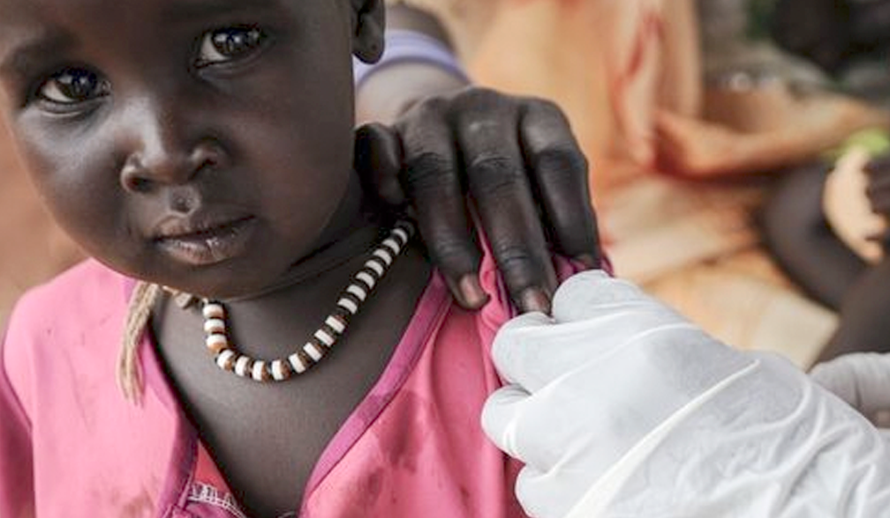

English
Home
About
Credits
Contact

Ebola FAQ
1. What is Ebola virus disease?
2. How do people become infected with the virus?
3. Can Ebola be transmitted through sex?
4. Who is most at risk
5. Signs and symptoms of Ebola
6. When should someone seek medical care?
7. What is the treatment?
8. Is there a vaccine for Ebola?
9a. How most cases are contracted
9b. Ways to prevent infection and transmission
10. What about health workers? How should they protect themselves while caring for patients?
What about rumours that some foods can prevent or treat the infection?
Is it safe to travel during an outbreak?
Home
About
Credits
Contact